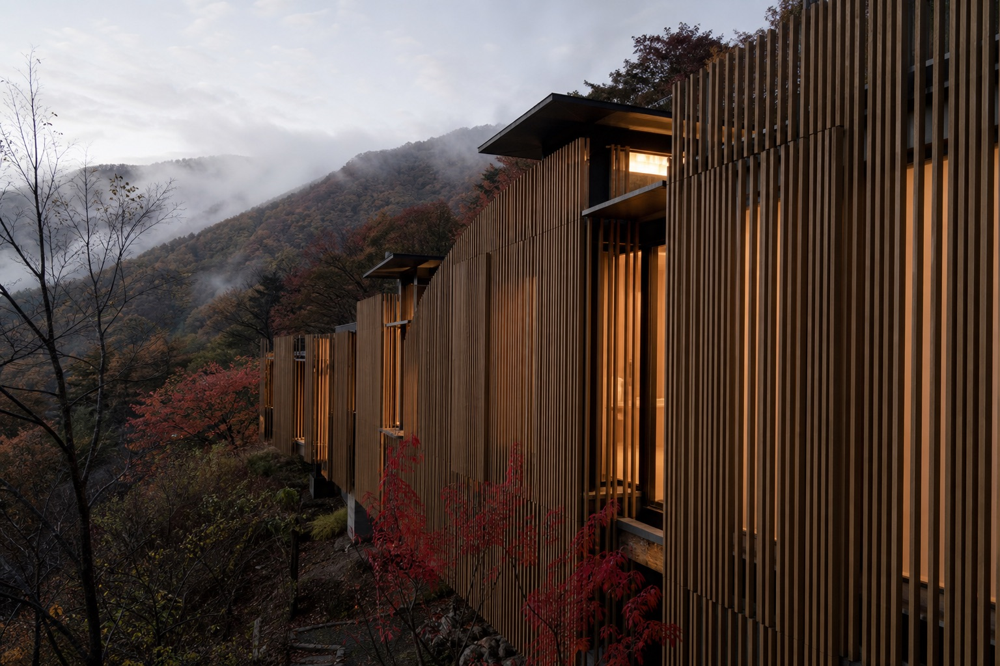
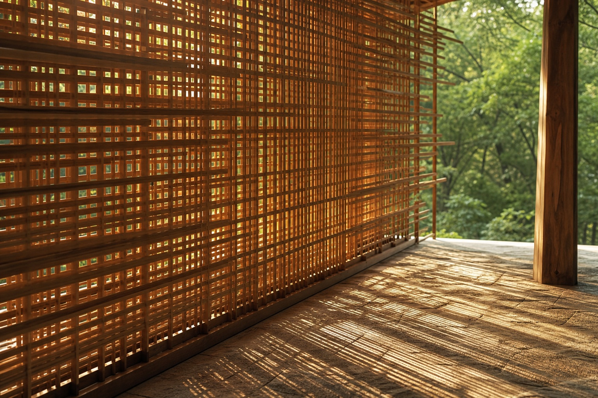
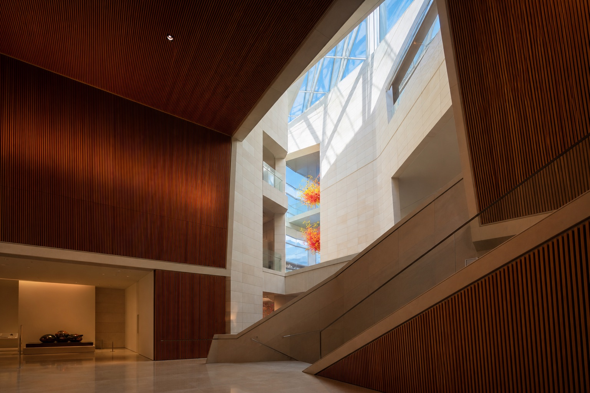
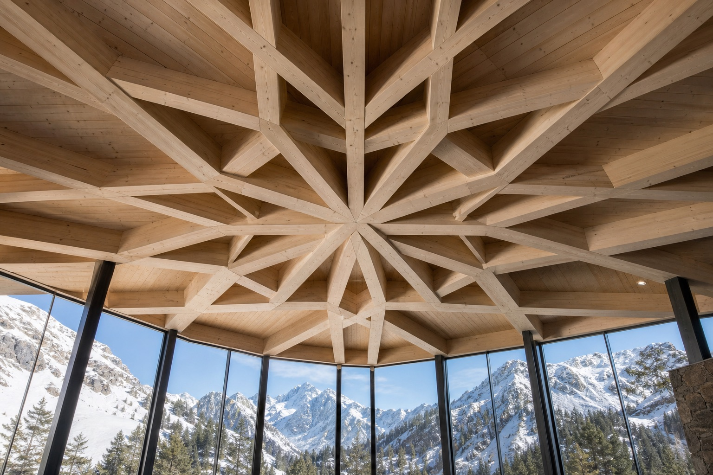

富山・長野紅葉自駕路線上，其實藏著好幾棟隈研吾的作品——從富山市中心的玻璃美術館，到戶隱神社參道入口的小茶屋，再到白馬雪山下的木構天花板。這些建築不搶戲，它們的任務是向周遭的山、林、雪低頭。
隈研吾，1954年生於橫濱，東京大學建築系出身，1990年成立隈研吾建築都市設計事務所，現為東京大學特別教授。他在國內外完成超過200件作品，從車站、美術館、市政廳到咖啡廳，用途橫跨極廣，2019年更主導設計了2020東京奧運主場館「國立競技場」，把「木」帶進了全球最大的體育舞台。
但真正讓他自成一格的，是那句常被引用的「負ける建築」——與其用鋼筋混凝土蓋出宣示權威、與環境對抗的紀念碑，不如讓建築主動「輸」給周遭的山、樹、光線，用木材與自然素材把量體「柔化」到幾乎透明。這趟富山長野的紅葉自駕路線上，正好能一路遇見這種美學的不同表情。
這個詞常被直譯成「輸的建築」，聽起來像是自謙，但其實是一套完整的設計立場——建築應該向環境「示弱」，而不是用量體與材質壓過周遭的一切。

隈研吾最常見的手法，是把原本一整片實牆拆解成數以百計、甚至上千的細木條或木格柵，讓光線、風、視線都能穿透其中——建築不再是一道阻隔內外的界線，而是一層可以呼吸的「屏幕」。這個手法在他手上出現過無數次變形：直向排列的縱格子、交錯編織的網狀結構、放射狀的天花板梁架，材質也從木頭延伸到竹子、石材、金屬網。
他把20世紀那種用鋼筋混凝土與自然對抗、追求「勝過」環境的建築思維，稱為一種已經破產的美學；相對地，他主張建築應該用在地木材把自己「輕量化」，讓量體消融進周遭的地景裡——這也是為什麼他的作品經常刻意壓低存在感，讓山、森林、雪景才是真正的主角。
隈研吾的職涯並非一路順遂——1990年代初期一件東京作品曾引來嚴厲批評，他因此離開東京、轉往地方接案十餘年，反而在這段「下放」時期磨出了以木材與在地素材為核心的風格，最終在2000年代後半重返國際舞台核心。
1979年東京大學大學院建築意匠專攻修士課程修了，曾任職日本設計、戸田建設，1985–86年赴美國哥倫比亞大學擔任客座研究員。
同年完成的東京作品受到業界嚴厲批評，此後轉往地方城市接案十餘年，反而奠定了他日後以木材、在地素材為核心的設計語彙。
1996年「伝統芸能伝承館 森舞台」獲日本建築學會賞作品賞，2001年再獲村野藤吾賞，確立了他作為「木」與「和」建築代表人物的地位。
在長野戶隱神社奧社參道入口，完成這座以縱向木格柵包覆的小型茶屋——這趟紅葉自駕路線上最早完工的一件作品。
東京根津美術館本館竣工，同年獲毎日芸術賞，是他重返國際級大案的重要轉折點之一。
富山市玻璃美術館、市立圖書館與銀行共構的複合建築，用富山杉、玻璃與石材打造出一道貫穿樓層的斜向中庭，是縣內最具代表性的作品。
2020東京奧運主場館，以層疊木構元素包覆巨大量體，把「負ける建築」的理念帶進全球規模最大的體育建築舞台。
在白馬村打造以放射狀木構天花板著稱的複合設施，靈感取自雪的結晶，是這趟行程裡最靠近雪山主題的一件作品。
2023年富山「オーバード・ホール中ホール」開館；2024年獲日本藝術院賞・恩賜賞，持續活躍於國內外建築舞台。

2015年開幕的TOYAMAキラリ，是富山市立圖書館、市玻璃美術館與富山第一銀行本店共構的複合設施，由RIA、隈研吾建築都市設計事務所、三四五建築研究所三方聯合設計。外觀用鋁、玻璃與白御影石等約1,000片異材質面板組合而成，據說靈感正是取自立山連峰起伏的山肌紋理。
建築最戲劇性的部分，是一道從2樓貫穿到6樓的斜向挑空中庭，自然光從高處天窗一路灑落；室內壁面與隔間大量使用富山縣產杉木製成的直向格柵，在現代量體裡保留木頭的溫度。6樓常設展「Glass Art Garden」展出玻璃藝術大師Dale Chihuly的作品，讓自然光、木紋與玻璃色彩在同一個空間裡交會。

2020年開業的複合設施，由露營品牌Snow Peak與隈研吾合作打造，坐落在白馬村北城——跟這趟行程Day3入住的白馬村是同一個「北城」地區。最引人注目的，是入口大廳那片以放射狀木梁交錯搭建、彷彿雪花結晶放大版的天花板結構，落地窗外就是北阿爾卑斯連峰的雪山稜線。
園區內結合零售、餐飲、住宿與戶外體驗機能，全年營業；星巴克門市早上7點就開，跟這趟行程Day4清晨先去白馬大橋看日出、再回程順路喝杯咖啡的時間點剛好對得上。
除了上面三棟以外，隈研吾在兩縣還有其他作品——有些就在富山市區、順路就能看到；有些則落在較遠的城鎮，需要專程安排才到得了，這裡一併整理給有興趣深入的人參考。
富山市芸術文化ホール的中型音樂廳，隈研吾建築都市設計事務所擔任設計夥伴，就在富山駅北口步行可達的範圍，是這份清單裡最新完工的作品。
以香草花園、餐廳、三溫暖組成的複合園區，隈研吾設計的「香薰工坊」採無柱傘型結構。從富山駅車程約40分鐘，需要專程前往，不在自駕路線的順路範圍內。
鋼筋混凝土骨架外覆落葉松與耐候鋼板，北陸新幹線飯山駅步行5分鐘可達。位置偏北，離白馬、戶隱這段路線有一段距離，建議當作另一趟行程的目的地。
白樺樹枝隨機交錯支撐起玻璃屋頂、地面鋪滿苔蘚的森林教堂，是隈研吾作品裡最詩意的一件，但輕井澤位在長野縣東側，離這趟自駕路線較遠。
把這幾棟作品對照原本的8天行程，幾乎不用額外繞路——大部分本來就在你路過的地方，只是多留意一下建築本身。
富山駅走路約10分鐘，這幾天晚上或空檔時間都能順路排進去，館內玻璃美術館開到18:00（週五、六到20:00）。
就在富山駅北口一帶，跟租車取還車的區域是同一個範圍，路過順便看外觀即可，2023年剛開幕的新作品。
離白馬大橋、大出公園約1.3公里，清晨看完日出、逛完大出公園後，順路開2、3分鐘過去看看天花板結構，星巴克7點就開。
本來就會走到奧社參道入口，順路看一眼這棟2003年的作品；營業到11月中旬，時間點也對得上，可以當作午餐蕎麥麵之外的另一個選項。
| TOYAMAキラリ | 玻璃美術館9:30–18:00（週五・六至20:00），圖書館開放時間略有不同，全年無休 |
| オーバード・ホール中ホール | 演出場館，開放時間依當期節目而定，建議先查官網場次 |
| 戶隱奧社の茶屋 | 營業期間4月下旬–11月中旬（積雪期休業），そば処營業時間依現場公告 |
| Snow Peak LAND STATION HAKUBA | 主店舗11:00–19:00，星巴克7:00–19:00，全年無休（雪峰食堂週二休） |
| 拍照 | 多數作品是仍在正常營業的公共設施或商業空間，拍照前留意是否有禁止攝影的區域（例如美術館常設展）。 |
| 季節限制 | 奧社の茶屋、Healthian-wood等山區設施會因積雪季節性休業，出發前建議再次確認官網公告。 |
| 非官方導覽 | 本頁為獨立策展整理，非隈研吾建築都市設計事務所官方網站，資訊如有出入請以各設施官網為準。 |